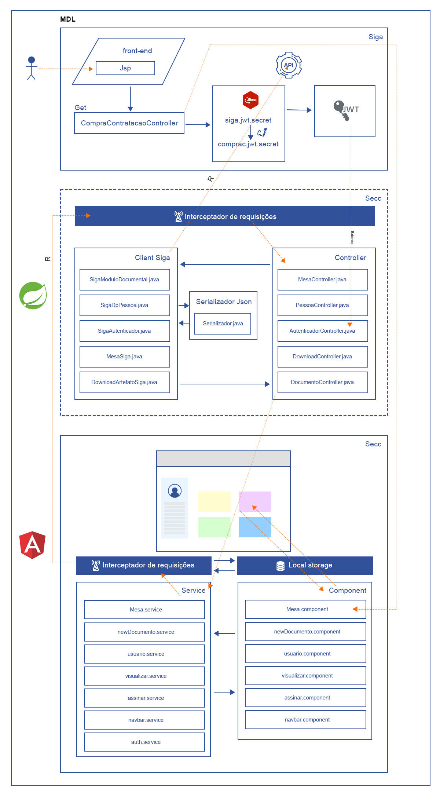

Comunicação com o Siga
Desenho da arquitetura do módulo de Serviço e Contratação (SECC). Abaixo mostra com funciona o acesso pelo SIGA, ou seja, sem tela de login. Também é mostrado a intermediação do Front-End acessando a Rest API e a mesma acessando o Siga:

Para ter acesso ao repositório acesse: GitLab